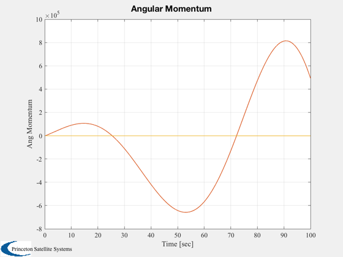
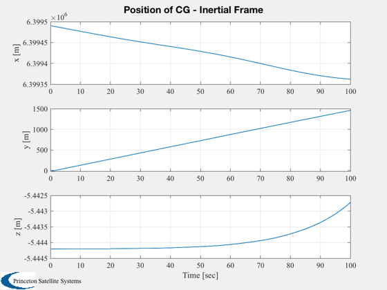
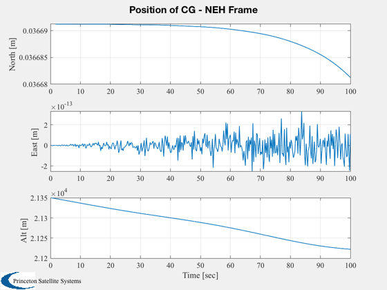
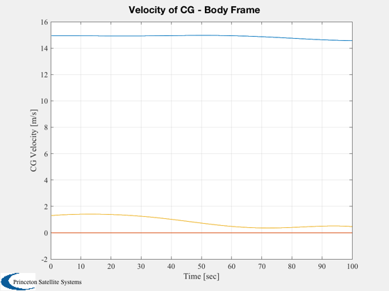
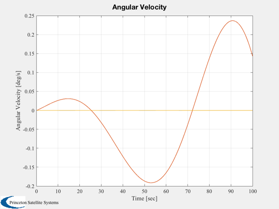
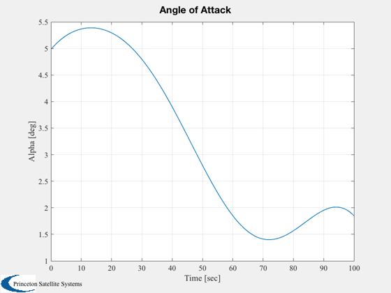
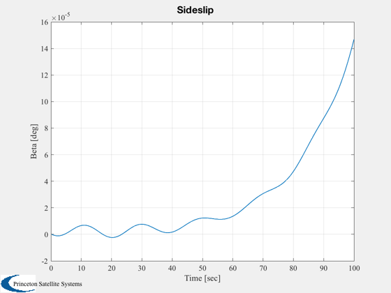
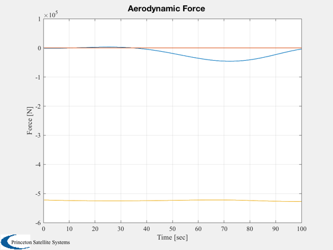
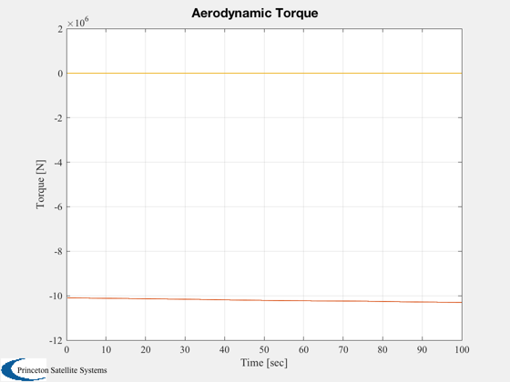

Simulate the airship dynamic model.
------------------------------------------------------------------------
Runs a full nonlinear simulation of the specified airship model.
The simulation is open loop.
Computes a data structure with fields:
- t Time
- r ECI position of origin
- rCG ECI position of CG
- v velocity of origin in body frame
- vCG velocity of CG in body frame
- q ECI to body quaternion
- w angular velocity of body frame
- alpha angle of attack
- beta sideslip
- force aerodynamic force
- torque aerodynamic torque------------------------------------------------------------------------
See also AlphBeta, QECI, RNEH, AC, ACInit, AirData, @acstate/acstate.m,
AirshipTrim, BuildAirshipModel, AirshipAero, Altitude, IConv, QTForm,
Plot2D, TimeGUI, Cross, Mag, SkewSymm
------------------------------------------------------------------------
Contents
Demo parameters
alpha = 5*pi/180;
beta = 0;
V = 15;
w0 = [0;0;0];
alt = 21336;
elv = [0;0];
rud = [0;0];
xo = 100;
T = 100;
trim = 1;
doPlot = 1;
Global for the time GUI
global simulationAction
simulationAction = ' ';
Airship data
d = BuildAirshipModel('ASM1',xo);
Trim
if( trim )
[Thrust,mu,dElv] = AirshipTrim( d, alt, 0, alpha, V );
d.control.throttle = Thrust/(2*d.engine.thrustMax);
d.control.mu = mu;
d.control.dELVL = dElv;
d.control.dELVR = dElv;
else
d.control.throttle = 0;
d.control.mu = 0;
d.control.dELVL = 0;
d.control.dELVR = 0;
end
Added Flap Deflections
d.control.dELVL = d.control.dELVL + elv(1);
d.control.dELVR = d.control.dELVR + elv(2);
d.control.dRUDB = rud(1);
d.control.dRUDT = rud(2);
Re = 6378.14 * 1e3;
rCG = [Re+alt;0;0];
ta = tan(alpha);
vx = V*cos(beta)/sqrt(1+ta^2);
vy = V*sin(beta);
vz = vx*ta;
vCG = [vx;vy;vz];
v0 = vCG - Cross(w0,d.cG);
ss = SkewSymm(d.cG);
iCG = IConv(d.inertiaCG);
iOrigin = IConv(d.inertia);
HCG = iCG*w0;
w0 = (iOrigin+ss*ss*d.mass)\(HCG);
eulInit = [0;0;pi/2];
q = QECI( rCG, eulInit );
r0 = rCG - d.cG;
wR = ones(length(d.rotor),1)*5;
engine = [];
actuator = [];
sensor = [];
flex = [];
disturb = [];
Initial time and state
t = 0;
x = acstate( r0, q, w0, v0, wR, d.mass, d.inertia, d.cG, engine, actuator, sensor, flex, disturb );
Initialize the model
dT = 0.25;
nSim = T/dT;
d = ACInit( x, d );
r = zeros(3,nSim);
v = zeros(3,nSim);
q = zeros(4,nSim);
w = zeros(3,nSim);
f = zeros(3,nSim);
trq = zeros(3,nSim);
Initialize the time display
tToGoMem.lastJD = 0;
tToGoMem.lastStepsDone = 0;
tToGoMem.kAve = 0;
[ ratioRealTime, tToGoMem ] = TimeGUI( nSim, 0, tToGoMem, 0, dT, 'Airship Simulation' );
for k = 1:nSim
[ ratioRealTime, tToGoMem ] = TimeGUI( nSim, k, tToGoMem, ratioRealTime, dT );
r(:,k) = get(x,'r');
v(:,k) = get(x,'v');
q(:,k) = get(x,'q');
w(:,k) = get(x,'w');
vAero = v(:,k) + Cross(w(:,k),d.cG);
altk = Altitude(r(:,k),d.atmUnits);
[alphk,betak] = AlphBeta(vAero);
[mN,qBar,rho] = AirData( Mag( vAero ), altk, d.atmData, d.atmUnits );
aero = AirshipAero( alphk, betak, x, d.aero, qBar, d.control, d.flex, rho );
f(:,k) = aero.force;
trq(:,k) = aero.torque;
x = AC( x, t, dT, d );
t = t + dT;
switch simulationAction
case 'pause'
pause
simulationAction = ' ';
case 'stop'
doPlot = 0;
return;
case 'plot'
break;
end
end
TimeGUI('close');
t = (1:k)*dT;
r = r(:,1:k);
v = v(:,1:k);
q = q(:,1:k);
w = w(:,1:k);
f = f(:,1:k);
trq = trq(:,1:k);
Compute the angular momentum of the body about the CG for both cases
H = IConv(d.inertia)*w - d.mass*Cross(d.cG,Cross(w,d.cG));
compute the position and velocity of the CG
rCG = r + QTForm(q,d.cG);
vCG = v + Cross(w,d.cG);
compute the angle of attack and sidelsip
alpha = atan( vCG(3,:)./vCG(1,:) )*180/pi;
beta = asin( vCG(2,:)./Mag(vCG) )*180/pi;
save results in data structure
out.t = t;
out.x = x;
out.r = r;
out.rCG = rCG;
out.v = v;
out.vCG = vCG;
out.q = q;
out.w = w*180/pi;
out.alpha = alpha;
out.beta = beta;
out.force = f;
out.torque = trq;
if( ~doPlot )
return;
end
transform to the North-East-Up frame
rneu = zeros(3,k);
for i=1:k
rneu(:,i) = RNEH(rCG(:,i),'si');
end
Create the plots
Plot2D( t, H, 'Time [sec]', 'Ang Momentum', 'Angular Momentum' ), grid on, zoom on
Plot2D( t, rCG, 'Time [sec]', {'x [m]';'y [m]';'z [m]'}, 'Position of CG - Inertial Frame' )
Plot2D( t, rneu, 'Time [sec]', {'North [m]';'East [m]';'Alt [m]'}, 'Position of CG - NEH Frame','lin' )
Plot2D( t, vCG, 'Time [sec]', 'CG Velocity [m/s]', 'Velocity of CG - Body Frame' )
Plot2D( t, out.w, 'Time [sec]', 'Angular Velocity [deg/s]', 'Angular Velocity' )
Plot2D( t, alpha, 'Time [sec]', 'Alpha [deg]', 'Angle of Attack' )
Plot2D( t, beta, 'Time [sec]', 'Beta [deg]', 'Sideslip' )
Plot2D( t, f, 'Time [sec]', 'Force [N]', 'Aerodynamic Force' )
Plot2D( t, trq, 'Time [sec]', 'Torque [N]', 'Aerodynamic Torque' )
        